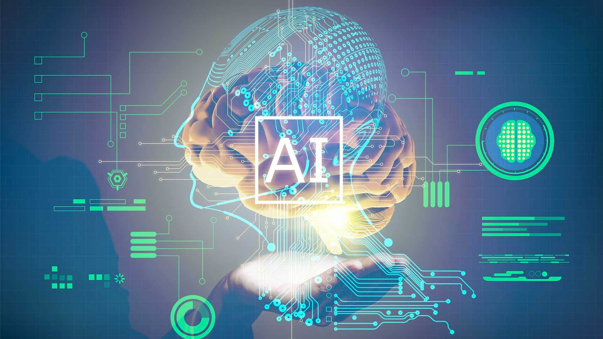

Üdvözöljük a kurzusok kezdőlapján!
Az Mesterséges intelligencia tárgy tartalma
A tantárgy rövid tartalma:Az emberi és a gépi intelligencia ismérvei. Történeti előzmények. Logikai játékok, tételbizonyítás, automatikus programozás, szimbolikus számítás, robotika, gépi látás, beszédfelismerés, ágens megközelítés. A tudás fontossága, tudásszemléltetési technikák: formális logika, előállító szabályok, szemantikus hálók, keretek, scriptek. Propozíciós és predikátum logika, PROLOG és LISP programnyelv. Fuzzy logika. Következtetési eljárások, vak és irányított keresési módszerek. Lokális algoritmusok: szimulált hűtés, Tabu-keresés. Genetikus algoritmus. Tudáskinyerés, tudásfeldolgozás. Szakértő rendszerek felépítése, funkciói. Kognitív pszichológiai alapismeretek. Előrecsatolt és visszacsatolt neurális hálók. Mintaillesztő algoritmusok. Természetes nyelvek feldolgozása. Morfológia típusok. A gépi intelligencia társadalmi hatásai.
Baffi Réka F4IIYA 2023